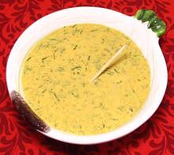

 |
Salad Dressing w/ Sour CreamHungary | ||||
| Makes: Effort: Sched: DoAhead: |
*** hrs Yes |
This is the dressing from our Green Bean and Tomato Salad. We set up this page because we think it deserves wider use. It is less runny than a regular oil and vinegar dressing. | |||
|
1 1 2/3 1/2 1 1/4 1/2 1/4 |
t t t t t c c c |
Tarragon fresh (1) Dijon Mustard Salt Pepper Paprika Wine Vinegar Olive Oil, pure Sour Cream |
Make: - (10 min)
|